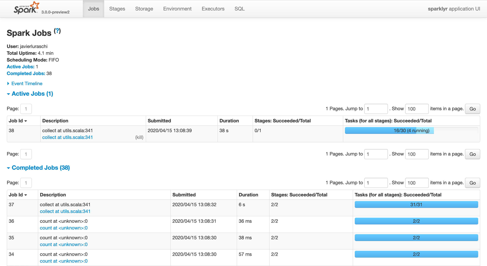
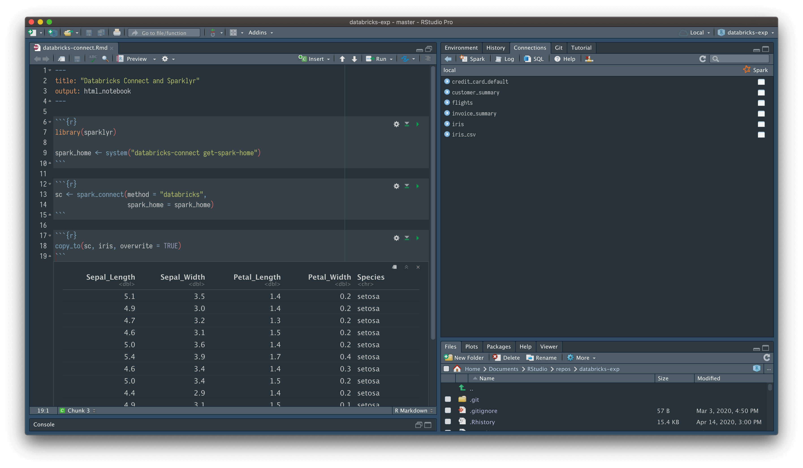

2020-05-06
A new version of sparklyr is now available on CRAN! In this sparklyr 1.2 release, the following new improvements have emerged into spotlight:
registerDoSpark() method to create a foreach parallel backend powered by Spark that enables hundreds of existing R packages to run in Spark.sparklyr to connect to remote Databricks clusters.dplyr.A number of inter-op issues observed with sparklyr and the Spark 3.0 preview were also addressed recently, in hope that by the time Spark 3.0 officially graces us with its presence, sparklyr will be fully ready to work with it. Most notably, key features such as spark_submit(), sdf_bind_rows(), and standalone connections are now finally working with Spark 3.0 preview.
To install sparklyr 1.2 from CRAN run,
{{r echo=TRUE, eval=FALSE}} install.packages("sparklyr")
The full list of changes are available in the sparklyr NEWS file.
The foreach package provides the %dopar% operator to iterate over elements in a collection in parallel. Using sparklyr 1.2, you can now register Spark as a backend using registerDoSpark() and then easily iterate over R objects using Spark:
{{r echo=TRUE, eval=FALSE}} library(sparklyr) library(foreach) sc <- spark_connect(master = "local", version = "2.4") registerDoSpark(sc) foreach(i = 1:3, .combine = 'c') %dopar% { sqrt(i) }
[1] 1.000000 1.414214 1.732051Since many R packages are based on foreach to perform parallel computation, we can now make use of all those great packages in Spark as well!
For instance, we can use parsnip and the tune package with data from mlbench to perform hyperparameter tuning in Spark with ease:
{{r echo=TRUE, eval=FALSE}} library(tune) library(parsnip) library(mlbench) data(Ionosphere) svm_rbf(cost = tune(), rbf_sigma = tune()) %>% set_mode("classification") %>% set_engine("kernlab") %>% tune_grid(Class ~ ., resamples = rsample::bootstraps(dplyr::select(Ionosphere, -V2), times = 30), control = control_grid(verbose = FALSE))
# Bootstrap sampling
# A tibble: 30 x 4
splits id .metrics .notes
* <list> <chr> <list> <list>
1 <split [351/124]> Bootstrap01 <tibble [10 × 5]> <tibble [0 × 1]>
2 <split [351/126]> Bootstrap02 <tibble [10 × 5]> <tibble [0 × 1]>
3 <split [351/125]> Bootstrap03 <tibble [10 × 5]> <tibble [0 × 1]>
4 <split [351/135]> Bootstrap04 <tibble [10 × 5]> <tibble [0 × 1]>
5 <split [351/127]> Bootstrap05 <tibble [10 × 5]> <tibble [0 × 1]>
6 <split [351/131]> Bootstrap06 <tibble [10 × 5]> <tibble [0 × 1]>
7 <split [351/141]> Bootstrap07 <tibble [10 × 5]> <tibble [0 × 1]>
8 <split [351/123]> Bootstrap08 <tibble [10 × 5]> <tibble [0 × 1]>
9 <split [351/118]> Bootstrap09 <tibble [10 × 5]> <tibble [0 × 1]>
10 <split [351/136]> Bootstrap10 <tibble [10 × 5]> <tibble [0 × 1]>
# … with 20 more rowsThe Spark connection was already registered, so the code ran in Spark without any additional changes. We can verify that this was the case by navigating to the Spark web interface:

Databricks Connect allows you to connect your favorite IDE (like RStudio!) to a Spark Databricks cluster.
You will first have to install the databricks-connect Python package as described in our README and start a Databricks cluster, but once that’s ready, connecting to the remote cluster is as easy as running:
{{r echo=TRUE, eval=FALSE}} sc <- spark_connect( method = "databricks", spark_home = system2("databricks-connect", "get-spark-home", stdout = TRUE))

That’s about it, you are now remotely connected to a Databricks cluster from your local R session.
If you previously used collect() to deserialize structurally complex Spark data frames into their equivalents in R, you likely have noticed that Spark SQL struct columns were only mapped into JSON strings in R, which was non-ideal. You might also have run into a much dreaded java.lang.IllegalArgumentException: Invalid type list error when using dplyr to query nested attributes from any struct column of a Spark data frame in sparklyr.
Unfortunately, often times in real-world Spark use cases, data describing entities comprised of sub-entities (e.g., a product catalog of all hardware components of some computers) needs to be denormalized / shaped in an object-oriented manner in the form of Spark SQL structs to allow efficient read queries. When sparklyr had the limitations mentioned above, users often had to invent their own workarounds when querying Spark struct columns, which explained why there was a mass popular demand for sparklyr to have better support for such use cases.
The good news is with sparklyr 1.2, those limitations no longer exist when working running with Spark 2.4 or above.
As a concrete example, consider the following catalog of computers:
{{r echo=TRUE, eval=FALSE}} library(dplyr) computers <- tibble::tibble( id = seq(1, 2), attributes = list( list( processor = list(freq = 2.4, num_cores = 256), price = 100 ), list( processor = list(freq = 1.6, num_cores = 512), price = 133 ) ) ) computers <- copy_to(sc, computers, overwrite = TRUE)
A typical dplyr use case involving computers would be the following:
{{r echo=TRUE, eval=FALSE}} high_freq_computers <- computers %>% filter(attributes.processor.freq >= 2) %>% collect()
As previously mentioned, before sparklyr 1.2, such query would fail with Error: java.lang.IllegalArgumentException: Invalid type list.
Whereas with sparklyr 1.2, the expected result is returned in the following form:
# A tibble: 1 x 2
id attributes
<int> <list>
1 1 <named list [2]>where high_freq_computers$attributes is what we would expect:
[[1]]
[[1]]$price
[1] 100
[[1]]$processor
[[1]]$processor$freq
[1] 2.4
[[1]]$processor$num_cores
[1] 256Last but not least, we heard about a number of pain points sparklyr users have run into, and have addressed many of them in this release as well. For example:
copy_to()<spark dataframe> %>% print(n = 20) now actually prints 20 rows as expected instead of 10spark_connect(master = "local") will emit a more informative error message if it’s failing because the loopback interface is not up… to name just a few. We want to thank the open source community for their continuous feedback on sparklyr, and are looking forward to incorporating more of that feedback to make sparklyr even better in the future.
Finally, in chronological order, we wish to thank the following individuals for contributing to sparklyr 1.2: zero323, Andy Zhang, Yitao Li, Javier Luraschi, Hossein Falaki, Lu Wang, Samuel Macedo and Jozef Hajnala. Great job everyone!
If you need to catch up on sparklyr, please visit sparklyr.ai, spark.rstudio.com, or some of the previous release posts: sparklyr 1.1 and sparklyr 1.0.
Thank you for reading this post.
This post was originally published on blogs.rstudio.com/ai/